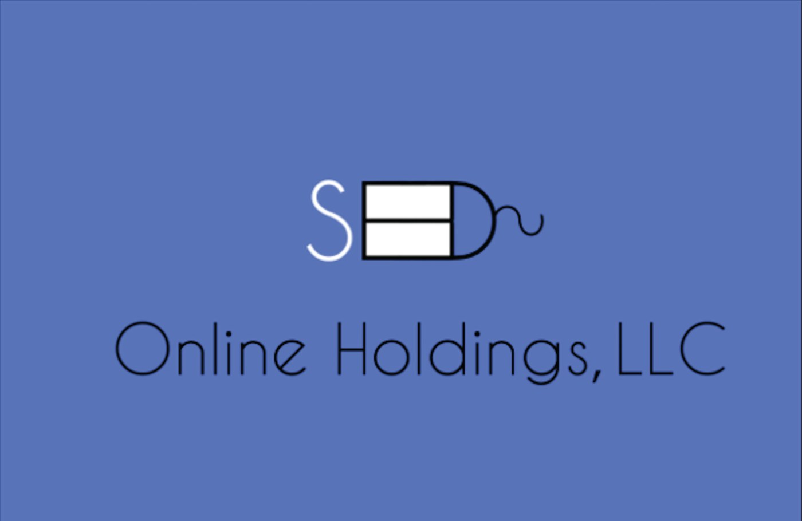
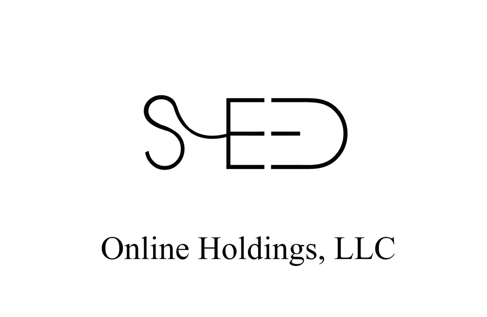
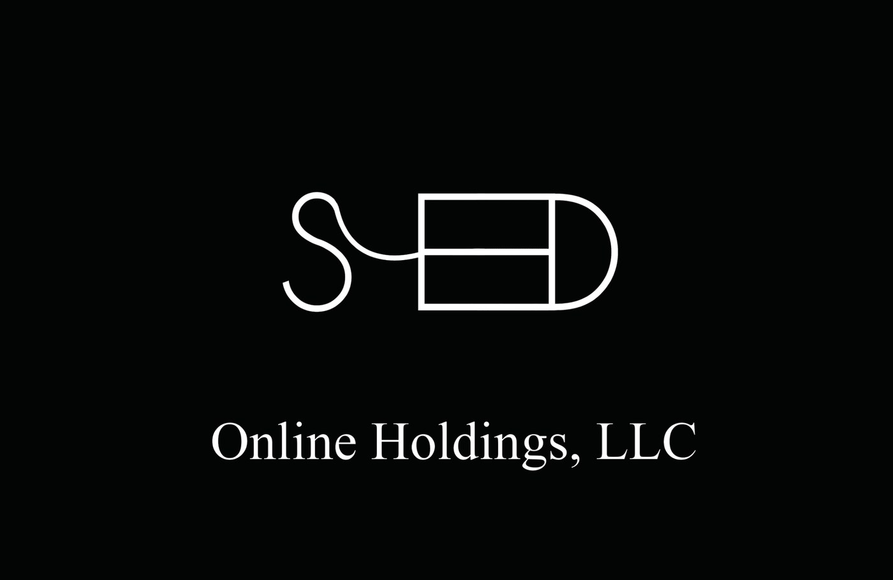

05Related Work
A single-line logotype for Seed, an online holdings company — the letters S, E, E and D drawn as one unbroken stroke, the final D closing the loop. Modern, minimal, and instantly a monogram.

Seed needed a wordmark that felt clean and contemporary without leaning on a literal sprout or icon. The solution draws the whole name as a single continuous line — S into E into E into D — so the logotype is the symbol, no separate mark required.
It holds up reversed out of colour or set dark on white, and reads as a tidy monogram at small sizes.


The line never lifts.
Each letter shares a stroke with the next, so the eye traces one path from the open curve of the S to the closed bowl of the D. The even line weight and generous counters keep it legible while the join makes it feel considered — a small piece of engineering as much as lettering.
The wordmark pairs with a light, wide-tracked setting of "Online Holdings, LLC" and carries a single accent colour — a confident blue — with black and white as the neutrals. One mark, three grounds, no fuss.